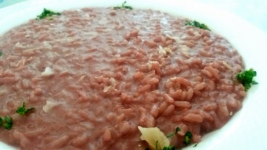
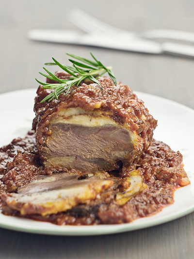

Piatti e ricette
Risotto al Moscato di Scanzo

Ingredienti (4 persone)
320 g di riso Carnaroli
1 bicchiere di Moscato di Scanzo
Brodo vegetale q.b.
1 scalogno
Burro
Parmigiano Reggiano grattugiato
Soffriggi lo scalogno tritato con una noce di burro, aggiungi il riso e tostalo. Sfumalo con il Moscato di Scanzo e lascia evaporare l’alcol. Porta a cottura aggiungendo poco alla volta il brodo caldo. Manteca con burro e Parmigiano e servi ben caldo: profumato, elegante e intenso.
Guanciale di manzo al Moscato di Scanzo

Ingredienti
Guanciale di manzo
1 bicchiere abbondante di Moscato di Scanzo
Cipolla
Alloro
Olio extravergine d’oliva
Sale e pepe
Rosola il guanciale in una casseruola con olio e cipolla. Sfuma con il Moscato di Scanzo, aggiungi alloro e copri. Cuoci a fuoco lento per diverse ore, finché la carne diventa tenerissima e il fondo si trasforma in una salsa densa e profumata.
Pere al moscato di scanzo
Ingredienti
Pere mature ma sode
Moscato di Scanzo
Zucchero
Cannella o chiodi di garofano (facoltativi)
Sbuccia le pere e cuocile lentamente in un tegame con Moscato di Scanzo e un cucchiaio di zucchero. Aggiungi spezie a piacere. Lascia ridurre il vino fino a ottenere uno sciroppo aromatico. Servi le pere tiepide, accompagnate dal loro fondo.